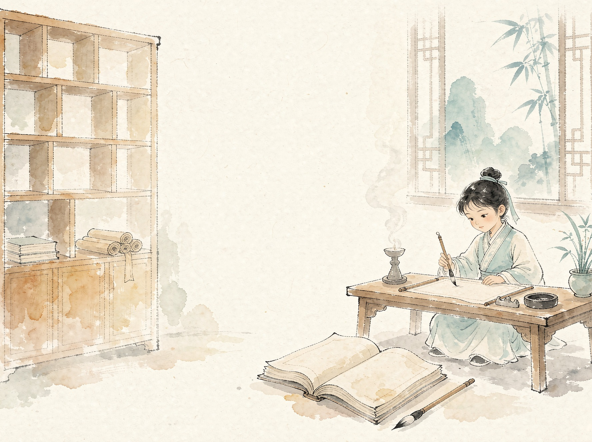
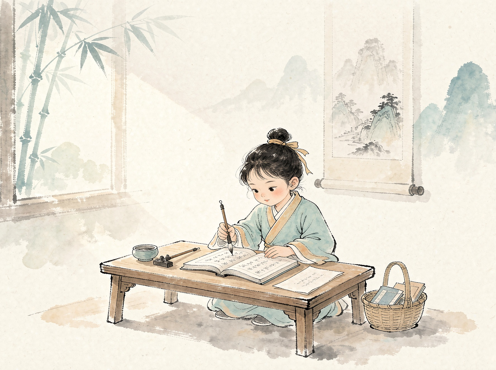

彼无书，且知勉：承接上一课「披蒲编，削竹简」而作评断。
彼，指路温舒、公孙弘；无书，并非全然无字可读，而是无成书可求；且知勉，而能自己勉力。
一个「知」字最重——不是被人逼着学，是自己知道要勉。
无书为境之阴，知勉为心之阳。
对比：披蒲编，削竹简 / 彼无书，且知勉
上句叙其法，此句评其心。法可仿，心难仿；孩子能学他们编竹削简，未必学得到那一分「自己知道要勉」。
对比前文阴阳太和：外境愈薄，内志愈须厚，方能相抵而成「和」。若外薄内亦薄，则学断；外厚内薄，则学浮。内外相称，学乃稳。
勘破俗见：两类常见偏差。其一，以为条件决定成就，无书便无学，故一切归咎于外；其二，把「勉」解作硬扛苦熬，只讲咬牙不讲方法。契合般若范式：佛说无书知勉，即非无书知勉，是名无书知勉。无书是境之假名，知勉是心之假名；境与心皆缘起，执境则怨，执心则矜。
他们没有书，可他们知道自己要努力。
不是别人逼的，是自己心里明白。
这一分「明白」，比书还重要。
有书不肯读，书也是摆设。
肯读的人，蒲草竹片也是书。


落到心上理解
抄书的「慢」今日是否仍必要？
必要之处在于「手到」。凡只经过眼睛的，多半留不住；经过手、口、心的，才沉下去。抄不必全书，抄其要句即可。
「知勉」二字，说的是自觉。自觉不是天生的，多由一次「我真的不会」的窘迫点燃。家长能给的最好的东西，是让他安全地遇见自己的不会。
不怨境、不矜心；知勉而不苦撑，即是无住。
条件不足，学不成是必然
外境薄则内志须厚，学仍可成
知勉就是硬扛苦熬，咬牙到底
知勉含方法与节奏，苦撑易断
有书便自然会有学
有书而不读，书成摆设；关键在肯不肯读
一、勘俗见。别把「勉」讲成吃苦比赛。真正的勉，是有方法、有节奏地持续。
二、现代对照。家里书很多而孩子不读，问题多半不在书少，而在「没有一件事是他自己想弄明白的」。
三、承接常变主线。书籍多寡、条件优劣（可变之相）；自觉自勉、肯下功夫（不变之常）。
四、承接教与学二分。家长能营造环境，自觉只能由孩子自己长出来。
承接选择力练习：把「我要更努力」换成「我这周具体做哪一件小事」。
字义与句读
彼：指路温舒、公孙弘。无书：无成书可读。且：而、却能。知勉：自知勉力。
全句释义：他们没有书可读，却知道自己勉力向学。
二命题考辨
表层因缘
此句是前句的评断，把「事」转成「心」。蒙学叙事，例后必评，评语往往只有四五字，却是全课的重心所在。
深层因缘
「知」字标出自勉与被迫的分界。被迫者，外有压力则动，压力去则止；自勉者，内有一问则动，问在则不止。学问之能久，全在此一字。
现代对照认知
今日孩子面对的不是「无书」，而是「书太多、刺激太多」。稀缺转向过剩之后，「知勉」的难度不减反增：要在无穷选项中，自己认定一件事值得做久。
般若范式互参
无书、有书、困、达，皆是因缘假名。
联动三才五蕴太极空杯模型：自勉之心是杯中之空，空则能受；环境与条件是器相，厚薄随时。器薄而空在，学不废；器厚而空塞，学反亡。
呼应「本乎数」：一日自勉，其数一；十日自勉，其数十；数积而志坚，非一日之勇。
延伸义理：
《金刚经》：应无所住而生其心。无所住者，不待外境。
《道德经》：自知者明，自胜者强。知勉，正是自胜之始。
三跨典互参（老庄、般若对照）
《道德经》：强行者有志。强行非蛮力，是有志而能持。
《庄子》：举世誉之而不加劝，举世非之而不加沮。自勉者，不随毁誉起落。
串联前文：上一课见其法，此课见其心；法与心俱，乃可仿效。
四和前面课程的张力
次第链条继续延伸：
……披蒲编，削竹简 → 彼无书，且知勉
呼应「曰仁义，礼智信」：自勉者不欺己，是「信」之近者；
呼应「教之道，贵以专」：自勉而后能专，不勉则专无所附；
呼应「玉不琢，不成器」：自勉是自执砂纸——人不自琢，他人代琢亦不深。
「知勉」既难由外给予，家长与教师还能做什么？
条件优渥是否必然削弱自勉？有无反例可循？
把「无书」的苦讲给孩子，边界在哪里，才不至变成情绪负担？